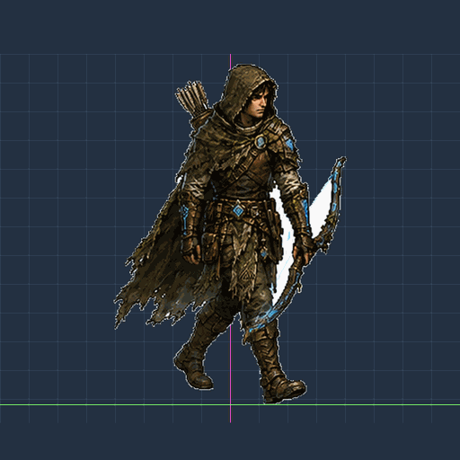
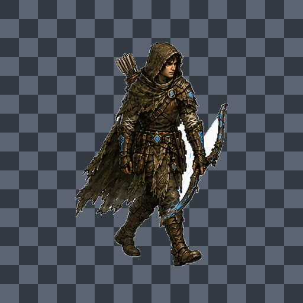
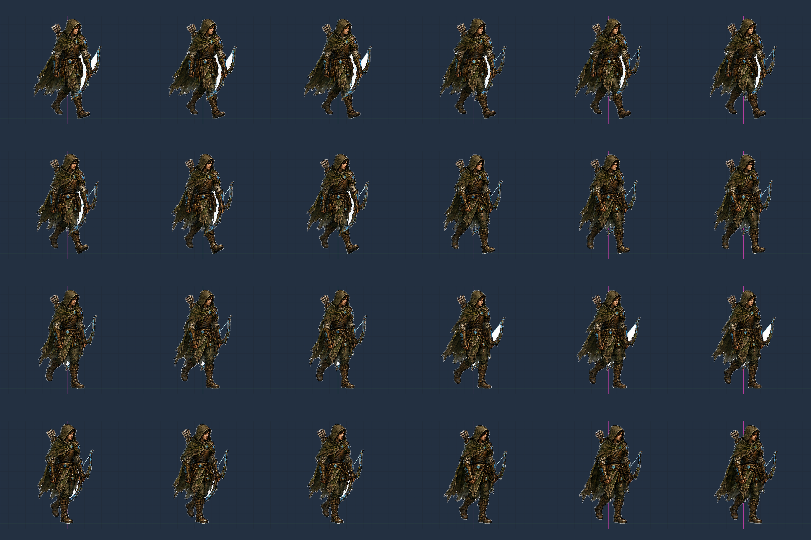
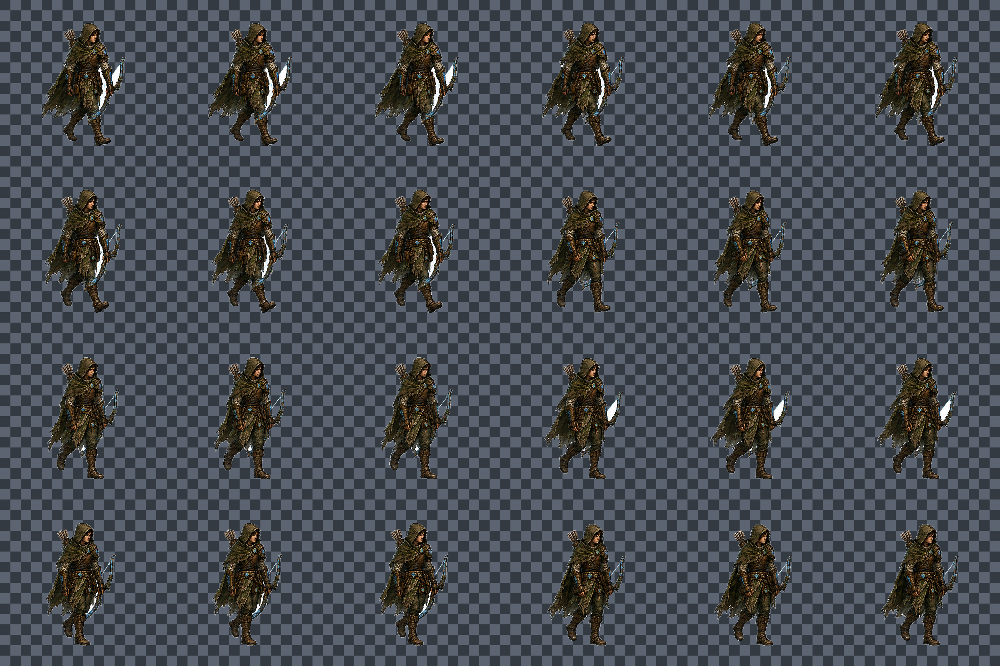
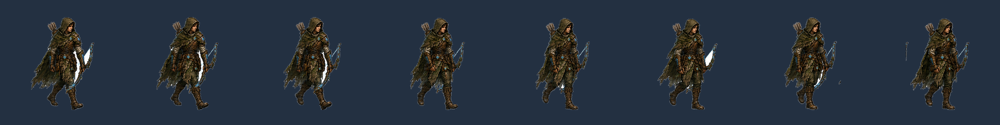

Male Archer Art Walk - 24 Frame Test
2D male archer art keyed to real alpha and packaged into the same 24-frame preview format. Source art has 8 unique poses, held across 24 frames for this test.
Transparent PNG frames are in frames-transparent/. Checkerboard is preview only.
Guide Slow GIF

Transparent Preview Over Checkerboard

Guide Sheet

Transparent Checker Sheet

Source 8 Poses
